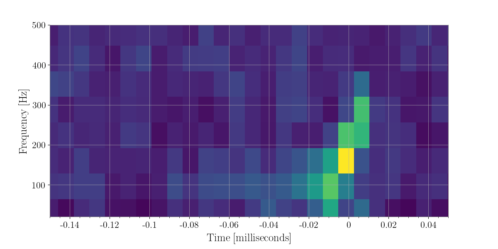
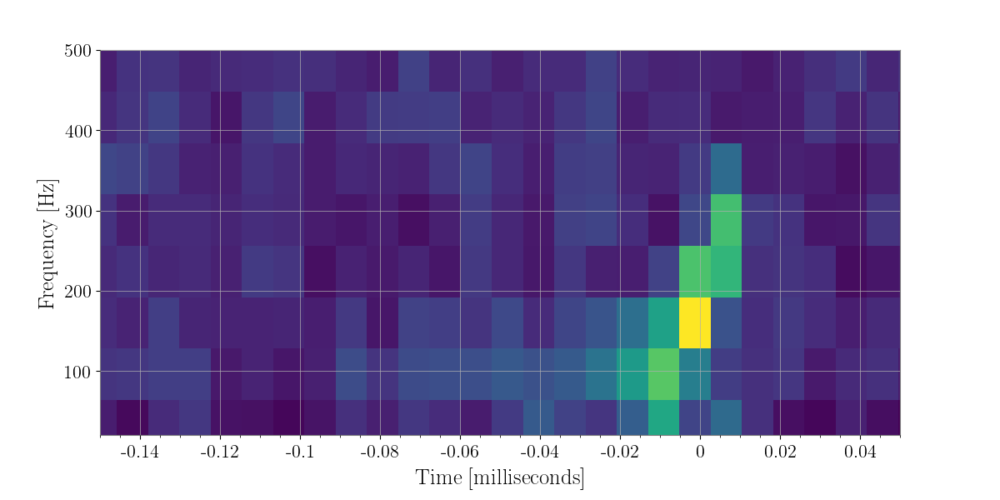

xpipeline an explanation¶
Introduction¶
Xpipeline is an unmodelled Gravitational Wave Burst analysis algorithm aimed at using coherent detection statistics as well as coherent conistency checks to eliminate surperfluous noise transients and extact real gravitational wave events from the data.
In order to build the statistics necessary to claim a detection and to calculate the coherent statistics needed to eliminate excess back ground noise, xpipeline conists of performing the same statistical “trials” over stretches of data that couldhave a gravitational wave event and data which it is either not believed or not possible for it to contain a graviational wave event. In addition to these two stretches of data, an analysis is also performed on a variety of simulated signals which is injected into the data that is believed to contain a graviational wave in order that we may understand what to expect from an actual gravitational wave if it were to appear in the data during the stretch fo time believed to contain and gravitational wave.
Below we highlight what one of these “statistical trials” look like (either for the time that does or does not contain a graviational wave). First, we use time from a known graviational wave event to hightlight what the trial would look like for it, and then second we use a known noise transient to see what it would look like for it.
In this breakdown, we imagine we are running over a stretch of data due to an alert from a electromagnetic countrpart, i.e. an event that is believed to create photometric and graviational wave signatures.
Through the alert, there is some timestamp considered as an “event time”, and around said event time is some stretch of probable time that could contain the graviational wave counterpart to the observation.
The data corresponding to the appropriate stretch of plausible time when the gravitational wave could have passed through earth is obtained for N detectors that were operating during that time.
The data from these N detectors are then FFT’ed and taken from time-amplitude into time-frequency space. Since we have a plausible sky location of the source, not only can we shrink the amount of data we search for a graviational wave over, we can combine the data streams from the N detectors based on the known travel time of graviational wave (i.e. the speed of light).
The tfmaps of N-1 detectors are time/phase shifted appropriately with the sky location (locations if there is some error box).
From these individual maps loud time-frequency pixels are identified and a “coherent” set of pixels is calculated from the overlap of these individually loud pixels.
After these coherent (overlapping) pixels are calculted a chosen “clustering” algorithm is applied to the pizels that group near by loud pixels into possible graviational wave candidate events.
So essentially, our possible grviational wave events are simply a cluster of loud time frequency pixels upon which numerous fancy statistics will be applied (these statistics often are called coherent statistics as they are most useful when N streams of data can be projected combined together).
Specificlly, these clusters then are assigned a variety of likelihoods these likelihoods for each cluster are based on the concept of translating the data in the dominant polarization frame i.e. plus and cross polarized time frequency maps instead of the standard time frequency maps considered above.
So the final important stat calculated is energy_of_cluster * likelihood_of_cluster for a given likelihood.
These likelihood rely largely on the ability to project the N stream of gravitational wave data in the relative antenna response pattern weighted time frequency space (so fplus fcross, fscalar, etc)
In order to calculate these antenna weighted tfmaps we need to re-weight the ASDs of the data streams appropriately. This re-weighted ASD is then multiplied with the time frequency map obtained normally above.
So let us see what the above looks like if we had had an counterpart signal to the very first graviational wave detection.
The Time-Frequency Map¶
The following is all open data obtained via LOSC
Data from Hanford and Livingston is obtained, and then whitened (one can think of this as a normalization process). The realty is that our detectors are more or less senstive to different frequencies and therefore in order to detect excess noise we must first “whiten that data.”
As I know the event time I have zoomed in close on the over all time frequnecy map so that the signal is quite clear even without any fancy statistics. Nonetheless, let us go through the whole process.
In [1]: from xpipeline.core.xtimeseries import XTimeSeries
In [2]: data = XTimeSeries.read('examples/GW150914.gwf', channels=['H1:GDS-CALIB_STRAIN','L1:GDS-CALIB_STRAIN'])
In [3]: asds = data.asd(1.0)
In [4]: whitened_timeseries = data.whiten(asds)
In [5]: fft_maps = whitened_timeseries.fftgram(1. /64)
In [6]: energy_maps = fft_maps.abs()
In [7]: gps = 1126259462.427
In [8]: plot = energy_maps.plot(figsize=[ 12, 6])
In [9]: for ax in plot.axes:
...: ax.set_xlim(gps - 0.15, gps + 0.05)
...: ax.set_epoch(gps)
...: ax.set_xlabel('Time [milliseconds]')
...: ax.set_ylim(20, 500)
...:
In [10]: plot
Out[10]: <SpectrogramPlot size 1200x600 with 2 Axes>

The Coherent Time-Frequency Map¶
In the above example you may notice that the data streams from both detectors do not seem to be in sync. Well this is because we have not utilized the most important concept in this unmodeled gravitational wave search analysis, the coherent combining of data streams, based upon an a sky location value known ahead of time.
In this example we use a sky location chosen from the sky map assocaited with GW150914 to illustrate what a coherent anlaysis might look like if say you had a Gamma-Ray-Burst or Supernova counterpart you were following up.
The way we can accomplish this is by either physically shifting the data of N-1 detectors relative to a baseline detector some delta T amount or we can phase shift the pixels of the timefrequencymap, here we physically shift the livingston data.
In [11]: from xpipeline.core.xdetector import Detector
In [12]: hanford = Detector('H1')
In [13]: livingston = Detector('L1')
In [14]: phi = -0.3801; theta = 2.7477 # Earth fixed coordinates
In [15]: time_shift = hanford.time_delay_from_earth_center_phi_theta([phi], [theta]) - livingston.time_delay_from_earth_center_phi_theta([phi], [theta])
In [16]: whitened_timeseries['L1:GDS-CALIB_STRAIN'].shift(time_shift[0]) # In place shift
In [17]: fft_grams = whitened_timeseries.fftgram(1. /64)
In [18]: energy_maps = fft_grams.abs()
In [19]: plot = energy_maps.plot(figsize=[ 12, 6])
In [20]: for ax in plot.axes:
....: ax.set_xlim(gps - 0.15, gps + 0.05)
....: ax.set_epoch(gps)
....: ax.set_xlabel('Time [milliseconds]')
....: ax.set_ylim(20, 500)
....:
In [21]: plot
Out[21]: <SpectrogramPlot size 1200x600 with 2 Axes>
In [22]: coh_energy_maps = energy_maps.to_coherent()
In [23]: plot = coh_energy_maps.plot(figsize=[ 12, 6])
In [24]: for ax in plot.axes:
....: ax.set_xlim(gps - 0.15, gps + 0.05)
....: ax.set_epoch(gps)
....: ax.set_xlabel('Time [milliseconds]')
....: ax.set_ylim(20, 500)
....:
In [25]: plot
Out[25]: <Plot size 1200x600 with 1 Axes>
 

Clustering Pixels¶
There are a few ways to speed up the processing of the map. Many of the pixels are not going to be significant, so we can threhold on what pixels we want (say the loudest 1 percent of pixels) and then employ a method to group the pixels together in what are referred to as clusters. These clusters become our possible gravitational wave triggers on which we will later perform statistics on to determine whether they originate from gravitational wave source or not.
In order to retain the visual key of a time frequency map pixels being grouped and added together, but also perform algorithmic opertaions quickly we utilize a subclass of the scipy.sparse.csc_matrix class which is designed to efficiently perform operation on 2D matrices that are mostly zeroes (which is what happens when we set 99 percent of the pixels to zero).
The algorithm employed to label the remaining pixels in our map into groups is a nearest neighbor cpp wrapped algorithm called fastlabel.
In [26]: energy_map_zeroed = energy_maps.blackout_pixels(99)
In [27]: plot = energy_map_zeroed.plot(figsize=[ 12, 6])
In [28]: for ax in plot.axes:
....: ax.set_xlim(gps - 0.15, gps + 0.05)
....: ax.set_epoch(gps)
....: ax.set_xlabel('Time [milliseconds]')
....: ax.set_ylim(20, 500)
....:
In [29]: plot
Out[29]: <SpectrogramPlot size 1200x600 with 2 Axes>
In [30]: coh_map = energy_map_zeroed.to_coherent()
In [31]: tf_indices = coh_map.nonzero()
In [32]: tindex = {k : tf_indices[0]
....: for k in energy_maps}
....:
In [33]: findex = {k : tf_indices[1]
....: for k in energy_maps}
....:
In [34]: energy_map_zeroed = energy_maps.to_sparse(tindex, findex)
In [35]: clusters = energy_map_zeroed.cluster()
In [36]: print(clusters)
min_time_of_cluster weighted_center_time max_time_of_cluster min_frequency_of_cluster weighted_center_frequency max_frequency_of_cluster number_of_pixels energy_of_cluster
0 1.126259e+09 1.126259e+09 1.126259e+09 352.0 384.000000 416.0 1.0 0.005643
1 1.126259e+09 1.126259e+09 1.126259e+09 288.0 320.000000 352.0 1.0 0.003935
2 1.126259e+09 1.126259e+09 1.126259e+09 416.0 448.000000 480.0 1.0 0.005139
3 1.126259e+09 1.126259e+09 1.126259e+09 544.0 576.000000 608.0 1.0 0.003143
4 1.126259e+09 1.126259e+09 1.126259e+09 544.0 576.000000 608.0 1.0 0.004165
5 1.126259e+09 1.126259e+09 1.126259e+09 416.0 503.588957 608.0 3.0 0.012433
6 1.126259e+09 1.126259e+09 1.126259e+09 544.0 576.000000 608.0 1.0 0.004864
7 1.126259e+09 1.126259e+09 1.126259e+09 224.0 256.000000 288.0 1.0 0.004321
8 1.126259e+09 1.126259e+09 1.126259e+09 224.0 256.000000 288.0 1.0 0.004506
9 1.126259e+09 1.126259e+09 1.126259e+09 544.0 576.000000 608.0 1.0 0.003757
10 1.126259e+09 1.126259e+09 1.126259e+09 224.0 256.000000 288.0 1.0 0.004201
11 1.126259e+09 1.126259e+09 1.126259e+09 352.0 419.883403 480.0 2.0 0.008429
12 1.126259e+09 1.126259e+09 1.126259e+09 224.0 287.467397 352.0 2.0 0.008531
13 1.126259e+09 1.126259e+09 1.126259e+09 480.0 545.204538 608.0 2.0 0.012489
14 1.126259e+09 1.126259e+09 1.126259e+09 480.0 544.379939 608.0 2.0 0.009983
15 1.126259e+09 1.126259e+09 1.126259e+09 544.0 576.000000 608.0 1.0 0.003333
16 1.126259e+09 1.126259e+09 1.126259e+09 416.0 448.000000 480.0 1.0 0.004619
17 1.126259e+09 1.126259e+09 1.126259e+09 544.0 576.000000 608.0 1.0 0.003570
18 1.126259e+09 1.126259e+09 1.126259e+09 416.0 478.178499 544.0 2.0 0.008983
19 1.126259e+09 1.126259e+09 1.126259e+09 480.0 546.685147 608.0 2.0 0.009002
20 1.126259e+09 1.126259e+09 1.126259e+09 288.0 320.000000 352.0 1.0 0.003493
21 1.126259e+09 1.126259e+09 1.126259e+09 288.0 320.000000 352.0 1.0 0.004594
22 1.126259e+09 1.126259e+09 1.126259e+09 288.0 349.999050 416.0 2.0 0.009899
23 1.126259e+09 1.126259e+09 1.126259e+09 544.0 576.000000 608.0 1.0 0.004006
24 1.126259e+09 1.126259e+09 1.126259e+09 416.0 448.000000 480.0 1.0 0.003919
25 1.126259e+09 1.126259e+09 1.126259e+09 224.0 289.060481 352.0 2.0 0.009638
26 1.126259e+09 1.126259e+09 1.126259e+09 544.0 576.000000 608.0 1.0 0.003205
27 1.126259e+09 1.126259e+09 1.126259e+09 160.0 192.000000 224.0 1.0 0.003570
28 1.126259e+09 1.126259e+09 1.126259e+09 288.0 349.473616 416.0 2.0 0.010108
29 1.126259e+09 1.126259e+09 1.126259e+09 480.0 543.551804 608.0 2.0 0.007351
... ... ... ... ... ... ... ... ...
4360 1.126260e+09 1.126260e+09 1.126260e+09 480.0 550.483030 608.0 2.0 0.009068
4361 1.126260e+09 1.126260e+09 1.126260e+09 160.0 192.000000 224.0 1.0 0.005350
4362 1.126260e+09 1.126260e+09 1.126260e+09 416.0 448.000000 480.0 1.0 0.003765
4363 1.126260e+09 1.126260e+09 1.126260e+09 160.0 192.000000 224.0 1.0 0.005137
4364 1.126260e+09 1.126260e+09 1.126260e+09 160.0 192.000000 224.0 1.0 0.004813
4365 1.126260e+09 1.126260e+09 1.126260e+09 352.0 384.000000 416.0 1.0 0.004061
4366 1.126260e+09 1.126260e+09 1.126260e+09 544.0 576.000000 608.0 1.0 0.004547
4367 1.126260e+09 1.126260e+09 1.126260e+09 416.0 448.000000 480.0 1.0 0.003775
4368 1.126260e+09 1.126260e+09 1.126260e+09 160.0 192.000000 224.0 1.0 0.004073
4369 1.126260e+09 1.126260e+09 1.126260e+09 288.0 350.994046 416.0 2.0 0.009694
4370 1.126260e+09 1.126260e+09 1.126260e+09 416.0 448.000000 480.0 1.0 0.005020
4371 1.126260e+09 1.126260e+09 1.126260e+09 160.0 192.000000 224.0 1.0 0.004732
4372 1.126260e+09 1.126260e+09 1.126260e+09 544.0 576.000000 608.0 1.0 0.003947
4373 1.126260e+09 1.126260e+09 1.126260e+09 544.0 576.000000 608.0 1.0 0.004673
4374 1.126260e+09 1.126260e+09 1.126260e+09 544.0 576.000000 608.0 1.0 0.004403
4375 1.126260e+09 1.126260e+09 1.126260e+09 416.0 448.000000 480.0 1.0 0.003591
4376 1.126260e+09 1.126260e+09 1.126260e+09 416.0 482.572551 544.0 2.0 0.007921
4377 1.126260e+09 1.126260e+09 1.126260e+09 352.0 384.000000 416.0 1.0 0.003609
4378 1.126260e+09 1.126260e+09 1.126260e+09 416.0 476.278025 544.0 2.0 0.008425
4379 1.126260e+09 1.126260e+09 1.126260e+09 288.0 320.000000 352.0 1.0 0.005852
4380 1.126260e+09 1.126260e+09 1.126260e+09 288.0 352.303467 416.0 2.0 0.011275
4381 1.126260e+09 1.126260e+09 1.126260e+09 352.0 418.057645 480.0 2.0 0.009032
4382 1.126260e+09 1.126260e+09 1.126260e+09 224.0 289.985734 352.0 2.0 0.009464
4383 1.126260e+09 1.126260e+09 1.126260e+09 288.0 320.000000 352.0 1.0 0.005937
4384 1.126260e+09 1.126260e+09 1.126260e+09 544.0 576.000000 608.0 1.0 0.004679
4385 1.126260e+09 1.126260e+09 1.126260e+09 96.0 163.241496 224.0 2.0 0.008354
4386 1.126260e+09 1.126260e+09 1.126260e+09 544.0 576.000000 608.0 1.0 0.003992
4387 1.126260e+09 1.126260e+09 1.126260e+09 544.0 576.000000 608.0 1.0 0.003627
4388 1.126260e+09 1.126260e+09 1.126260e+09 160.0 192.000000 224.0 1.0 0.003405
4389 1.126260e+09 1.126260e+09 1.126260e+09 288.0 320.000000 352.0 1.0 0.003649
[4390 rows x 8 columns]
Now the we have labelled our remaining pixels (the non-zeroed out pixels), let’s extract some of the cluster properites of these clusters. i.e. how many pixels are in the cluster the bounding box of the cluster (i.e. [[min-time, max-time], [min-freq, max-freq]] and the sum of energy over the cluster.
Specifically, the cpp wrapped function clusterproperities outputs the following information
- column 0: minimum time of cluster
- column 1: weighted center time of cluster
- column 2: maximum time of cluster
- column 3: minimum frequency of cluster
- column 4: weighted center frequency of cluster
- column 5: maximum frequency of cluster
- column 6: number of pixels in cluster
- column 7: sum-over-cluster map values for each likelihood
Before we do this though, we must re-make our sparse maps. for we have zeroed out some pixels in either map that are now part of our clusters. i.e. some pixels may have been in the top 1 percent of one but not all maps.
In [37]: loudest_cluster_idx = clusters['energy_of_cluster'].values.argmax()
In [38]: min_time = clusters['min_time_of_cluster'][loudest_cluster_idx]; max_time = clusters['max_time_of_cluster'][loudest_cluster_idx]; weighted_center_time = clusters['weighted_center_time'][loudest_cluster_idx]; min_freq = clusters['min_frequency_of_cluster'][loudest_cluster_idx]; max_freq = clusters['max_frequency_of_cluster'][loudest_cluster_idx];
In [39]: plot = energy_map_zeroed.to_xtimefrequencymapdict().to_coherent().plot()
In [40]: for ax in plot.axes:
....: ax.set_xlim(min_time, max_time)
....: ax.set_epoch(weighted_center_time)
....: ax.set_xlabel('Time [milliseconds]')
....: ax.set_ylim(min_freq, max_freq)
....:
In [41]: plot
Out[41]: <Plot size 1200x600 with 1 Axes>

The Dominant Polarization Frame¶
Now the we have a sky location assosciated with the event we can project every time-freqeuncy pixel into the Dominant Polarization Frame (DPF). What this means is that we assume the GW has a plus and cross polarization there is some orthoganal projection of the pixels onto the plus-cross plane for 2 or more detectors
In [42]: from xpipeline.core.xdetector import compute_antenna_patterns
In [43]: phi = -0.3801; theta = 2.7477 # Earth fixed coordinates
In [44]: antenna_patterns = compute_antenna_patterns(['H1', 'L1'], phi, theta, antenna_patterns=['f_plus', 'f_cross', 'f_scalar'])
In [45]: projected_asds = asds.project_onto_antenna_patterns(antenna_patterns, to_dominant_polarization_frame=True)
In [46]: projected_fftmaps = fft_grams.to_dominant_polarization_frame(projected_asds)
Now that we have projected each pixels onto the plus and cross phase + amplitude space Let’s see what it looks like if we simply take these projections and plot them.
In [47]: sparse_projected_fftmaps = {k : v.to_sparse(tindex, findex) for k, v in projected_fftmaps.items()}
In [48]: plot = sparse_projected_fftmaps['f_plus'].to_xtimefrequencymapdict().to_coherent().abs().plot()
In [49]: for ax in plot.axes:
....: ax.set_xlim(min_time, max_time)
....: ax.set_epoch(weighted_center_time)
....: ax.set_xlabel('Time [milliseconds]')
....: ax.set_ylim(min_freq, max_freq)
....:
In [50]: plot
Out[50]: <Plot size 1200x600 with 1 Axes>
In [51]: plot = sparse_projected_fftmaps['f_cross'].to_xtimefrequencymapdict().to_coherent().abs().plot()
In [52]: for ax in plot.axes:
....: ax.set_xlim(min_time, max_time)
....: ax.set_epoch(weighted_center_time)
....: ax.set_xlabel('Time [milliseconds]')
....: ax.set_ylim(min_freq, max_freq)
....:
In [53]: plot
Out[53]: <Plot size 1200x600 with 1 Axes>
Likelihoods¶
So now that we have possible graviational wave candidates in the form of clusters of loud pixels and the projected values of those pixels, how do we “rank” these clusters in order or more or less likely to have orginiated from graviational wave origins.
The Waveform¶
In order to train these likelihoods so we can understand what values to expect from gravitational wave clusters instead of random noise fluctations or glitches we must inject a number of fake gravitational wave like signals.
This involves to steps, generating a gravitational-wave like waveform on the fly and then injecting that signal into a stretch of data.
The parametrs that go into xmakewaveform are the family of waveform, a set of parameters specific for that waveform. In this case, the hrss is the quadrature sum of the RSS amplitudes of the plus and cross polarizations, tau is the duration, f0 is the central frequency, alpha is the chirp parameter, and delta is the phase at the peak of the envelope.
In [54]: from xpipeline.waveform import xwaveform
In [55]: from gwpy.plotter import TimeSeriesPlot
In [56]: t, hp, hc, hb = xwaveform.xmakewaveform(family='chirplet', parameters=[1e-22, 0.0033, 300.0, 0, 0, 1], T=513, T0=256.6161, fs=1024)
In [57]: plot = TimeSeriesPlot(hp, hc)
In [58]: plot.set_epoch(256.6161)
In [59]: plot.set_xlim([256.6161 - 0.05, 256.6161 + 0.05])
In [60]: plot
Out[60]: <TimeSeriesPlot size 1200x600 with 1 Axes>
Now let’s say this is not an analytical waveform and instead an hplus and hcross from say a supernova simulation. We can also handles that, tracked by git-lfs, the waveforms folder of X-Pypeline repository houses a number of hdf5 files full of pregenerated waveforms.
In [61]: from xpipeline.waveform import xwaveform
In [62]: from gwpy.plotter import TimeSeriesPlot
In [63]: t, hp, hc, hb = xwaveform.xmakewaveform(family='Morozova2018',
....: parameters=[10, 'M10_LS220'],
....: T=1, T0=0, fs=16384, catalogdirectory='../waveforms/')
....:
In [64]: plot = TimeSeriesPlot(hp, hc)
In [65]: plot.set_xlim([0, 0.1])
In [66]: plot
Out[66]: <TimeSeriesPlot size 1200x600 with 1 Axes>

The Injection¶
In a coherent search it is not enough to simply inject any old signal. You must take in a set of sky coordinates and project an individual signal with its antenna pattern (for example Fp*hp and Fc*hc) just like we do for the data. Let us say we have the SN waveform from above now we will assume this SN signal occurred at the same earth fixed coordinates of GW150914 from above, but since this is a simulation let us imagine VIRGO was on at the time too.
In [67]: from xpipeline.waveform import xinjectsignal
In [68]: start_time = 1156609396.0; block_time = 256; channels = ['H1', 'L1']; sample_rate = 8192; injection_file_name ='examples/injection_Morozova.txt'; injection_number=2; catalogdirectory='../waveforms/';
In [69]: [injection_data, gps_s, gps_ns, phi, theta, psi] = xinjectsignal.xinjectsignal_fromfile(start_time=start_time, block_time=block_time, channels=channels, injection_file_name=injection_file_name, injection_number=injection_number, sample_rate= sample_rate, catalogdirectory=catalogdirectory)
In [70]: from gwpy.plotter import TimeSeriesPlot
In [71]: plot = TimeSeriesPlot()
In [72]: for k, v in injection_data.items():
....: plot.add_timeseries(v, label=k)
....:
In [73]: plot.set_xlim([gps_s, gps_s + 2])
In [74]: plot.add_legend()
Out[74]: <matplotlib.legend.Legend at 0x11dccf4a8>
In [75]: plot
���������������������������������������������������Out[75]: <TimeSeriesPlot size 1200x600 with 1 Axes>
Now let’s inject this into some data, we could use real data but let’s just generate some data and color it to look like gaussian distributed aLIGO noise.
In [76]: colored_gaussian_noise = XTimeSeries.generate_noise_from_file('../noise/aLIGOZeroDetHighPower.h5', event_time=start_time, block_time=256, channel_names=['H1', 'L1'], sample_frequency=8192)
In [77]: data_plus_signal = colored_gaussian_noise.inject(injection_data)
In [78]: asds = data_plus_signal.asd(1.0)
In [79]: whitened_timeseries = data_plus_signal.whiten(asds)
In [80]: fft_maps = whitened_timeseries.fftgram(1. /64)
In [81]: energy_maps = fft_maps.abs()
In [82]: plot = energy_maps.plot(figsize=[ 12, 6])
In [83]: for ax in plot.axes:
....: ax.set_xlim(gps_s - 0.15, gps_s + 1.0)
....: ax.set_epoch(gps_s)
....: ax.set_xlabel('Time [milliseconds]')
....: ax.set_ylim(20, 3000)
....:
In [84]: plot
Out[84]: <SpectrogramPlot size 1200x600 with 2 Axes>